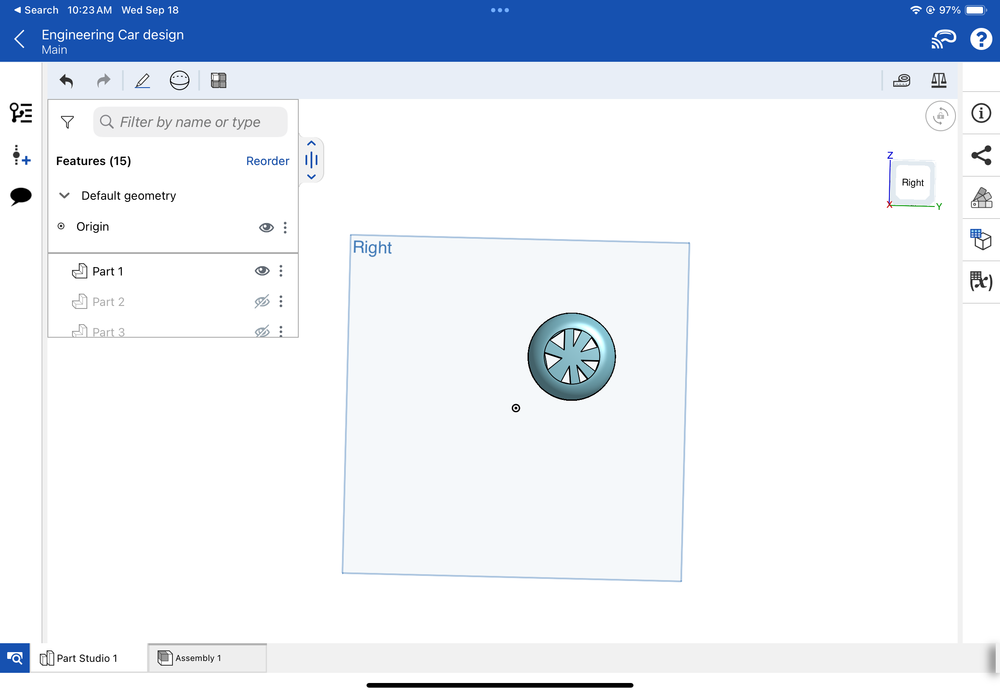
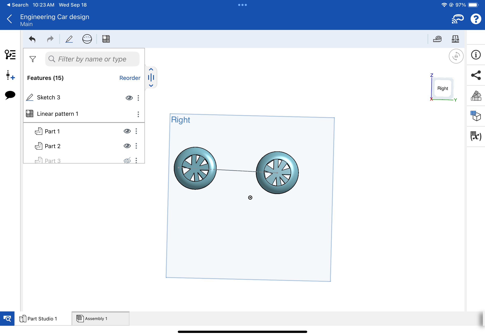
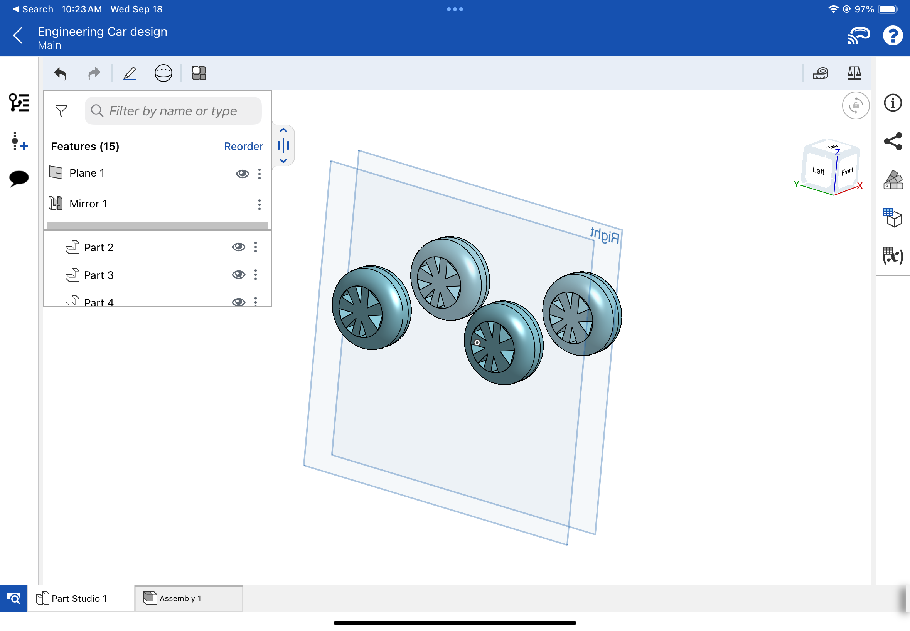
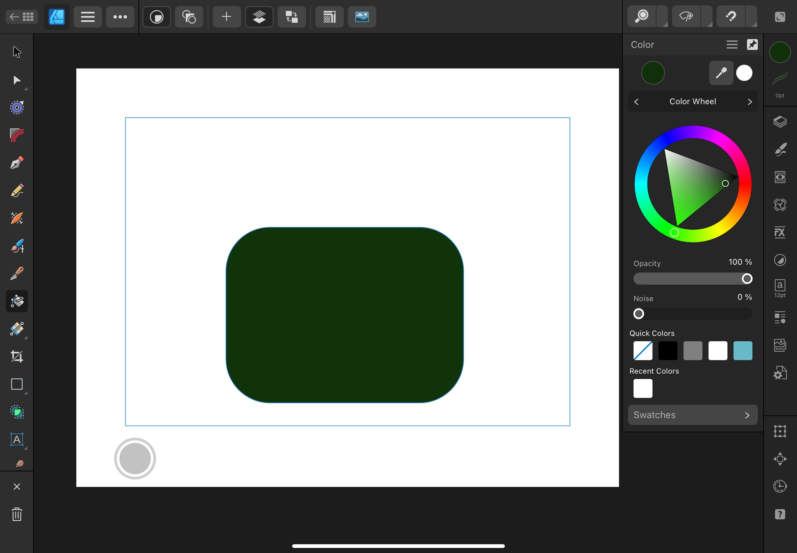
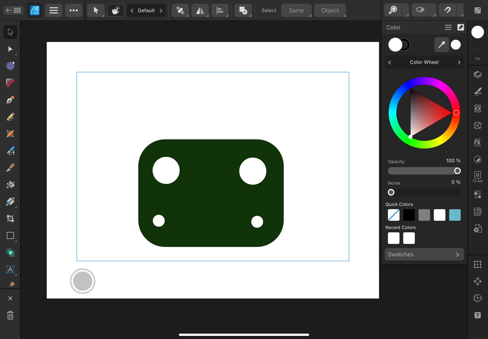
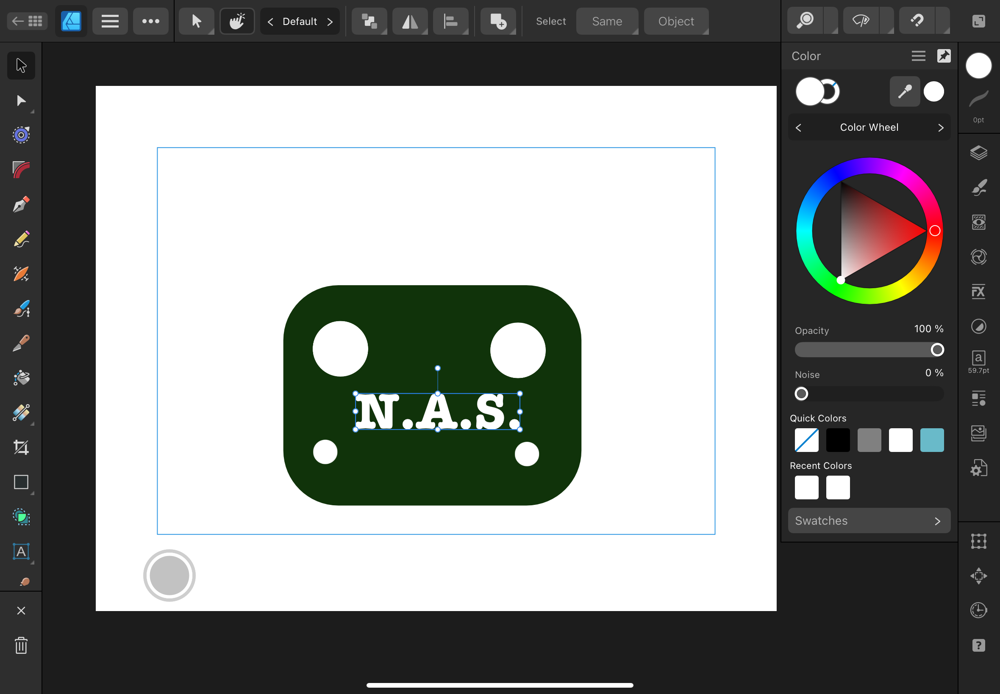
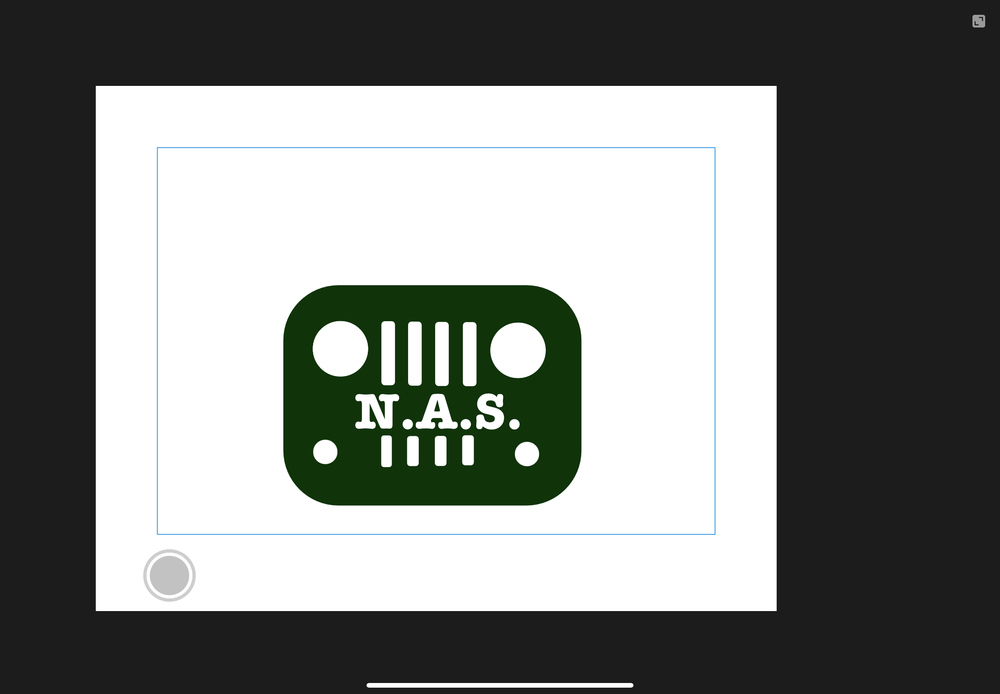

3D Design
For my 3D design I will be using the app OnShape because I am familiar with it.

The first step was creating a wheel with a circle and some shaping.
I then created the rims using a remover.

The next step was to make the second wheel.
To do this I created a line and then duplicated the wheel, spacing it 90 spaces away.

The final step was mirriing the two wheels so make 4 wheels
I created a new plane, selected the wheels, and mirrored the wheels so I had 4.
Logo Design
I am utilizing Affinity Designer 2 to develop a 2D design for our company's logo.

The first step was selecting my shape and color, in which I chose a curved rectangle and green color.
I chose this design because I wanted the logo to look like a jeep, which is similar to Jorge's car.

The next step was to add the circles, which are the lights on the jeep.

I then added our company's name, which is N.A.S.
I chose N.A.S. because it is an acronym for Nicholas, Adrian, and Sebastian.

Finally, I added the white bars to finish off the "jeep" logo.